As a devoted bunnygirl Viera player in FFXIV, I spent a lot of time in the village of Fanow with my fellow bunnygirls. This sidequest inspired me to make a little comic about what if the questgiver accompanied you to the relaxing rock pool…
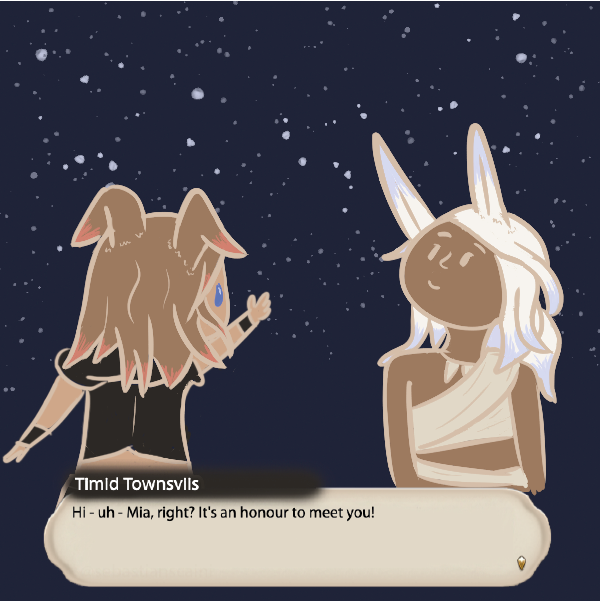
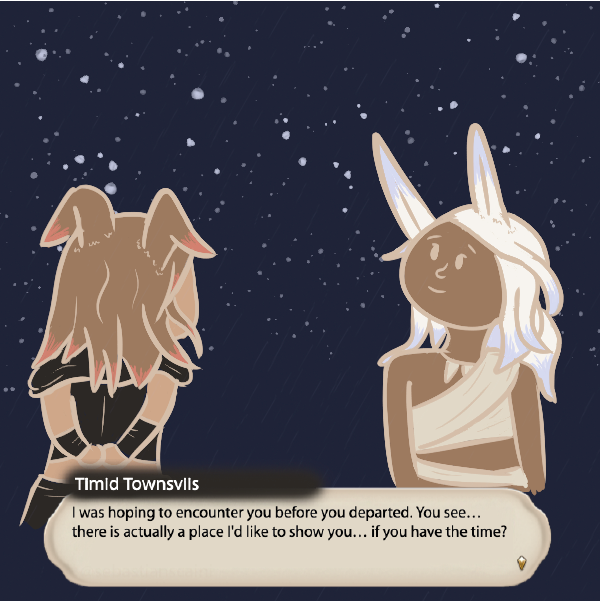
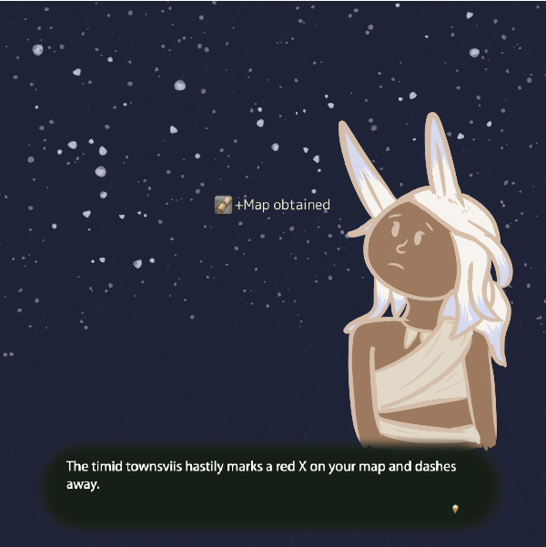
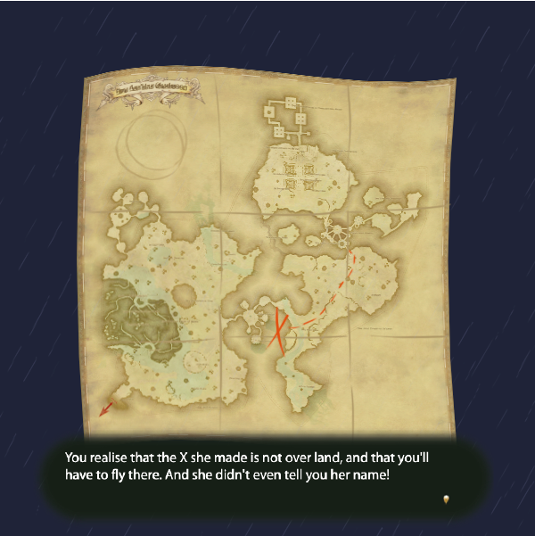
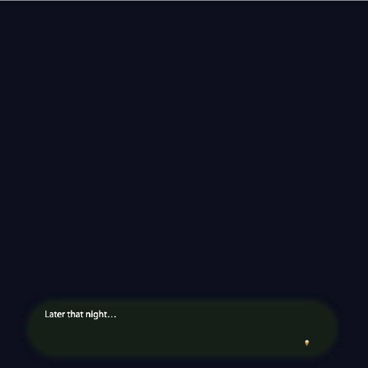
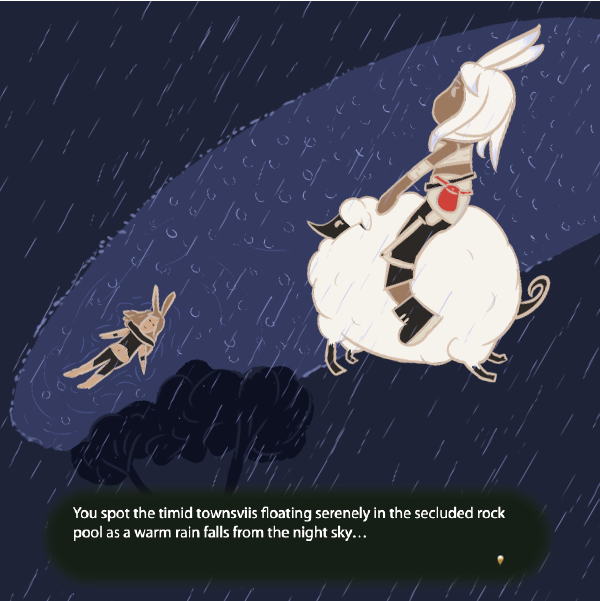
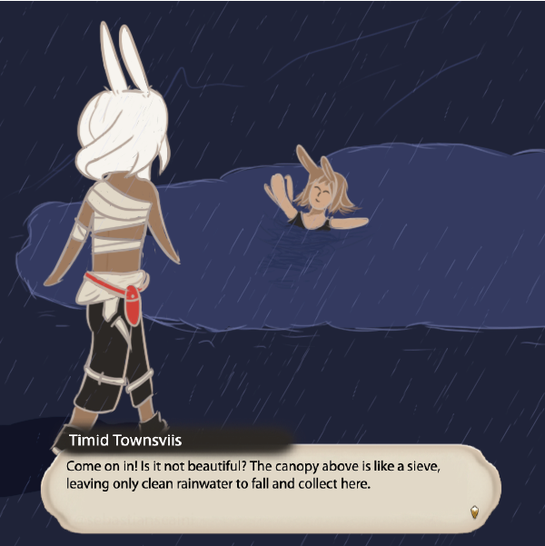
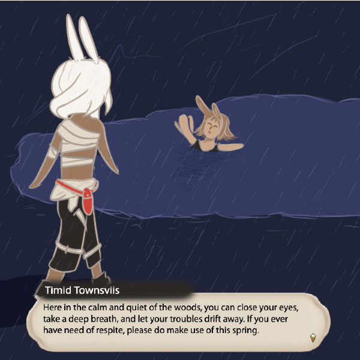
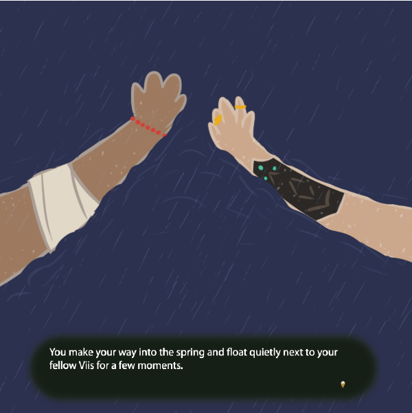
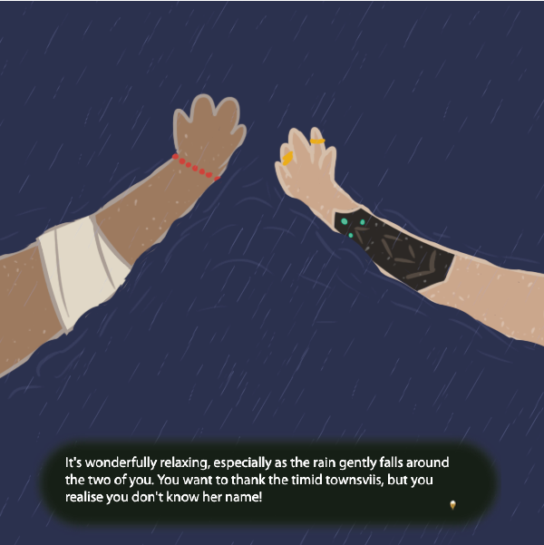
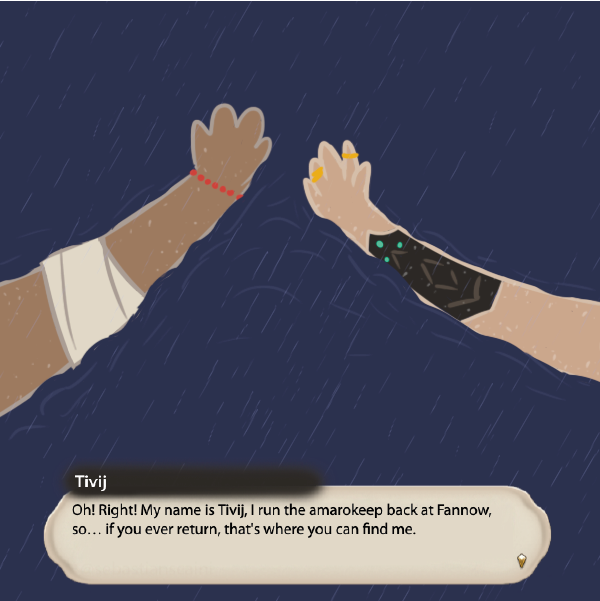
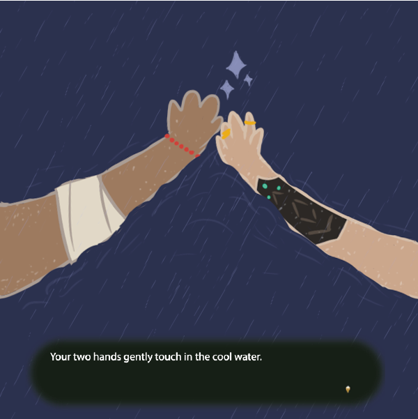
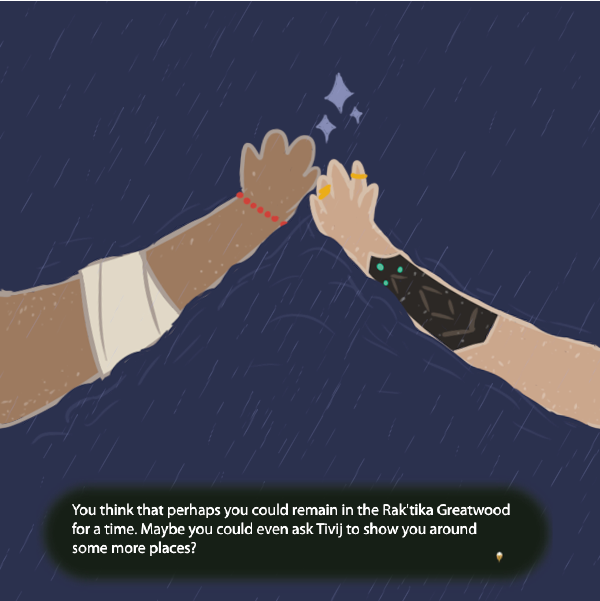
Thank you to Sebastian Scaini for the FFXIV Dialogue Maker and the FFXIV System Dialog Maker tools.
END TRANSMISSION